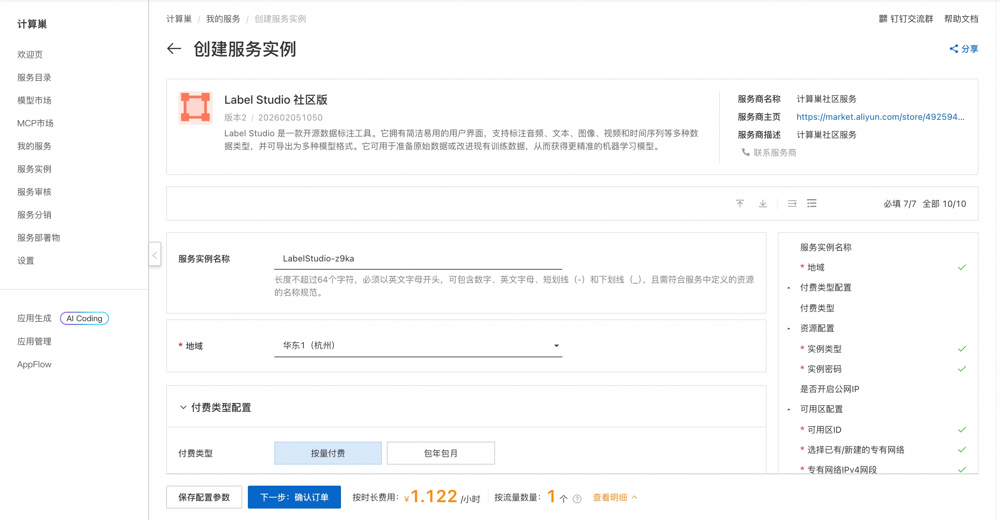
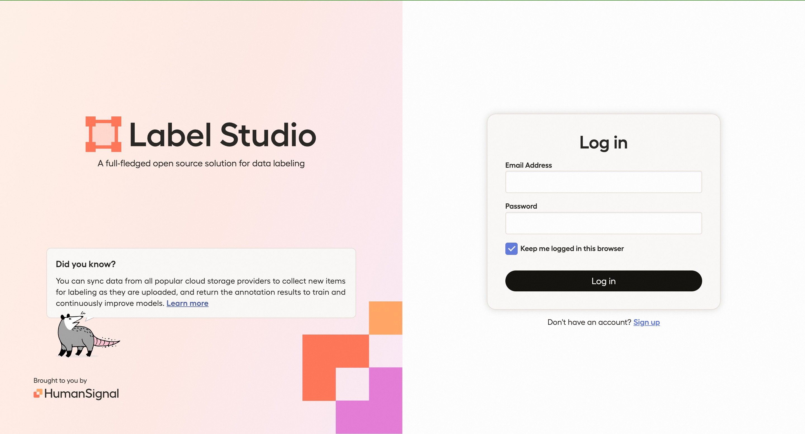

🌟 服务简介
💥 无需复杂配置，30 秒启动专业级 AI 数据标注平台！
Label Studio 社区版——全球开发者首选的开源数据标注工具，支持图像、文本、音频、视频、时间序列等多模态数据标注。内置智能预标注（AI-assisted labeling）、协作标注、项目管理与数据导出功能，助你高效构建高质量训练数据集，加速 AI 模型迭代！
Label Studio 社区版是一个免费、开源的数据标注平台，专为 AI/ML 团队打造。通过直观的 Web 界面，团队可快速创建标注项目、分配任务、审核结果，并直接导出 COCO、YOLO、Pascal VOC、JSON 等标准格式数据，无缝对接主流训练框架（如 PyTorch、TensorFlow）。
🚀 部署流程
⚡ 5 分钟极速上线，开箱即用！
借助阿里云计算巢，一键部署 Label Studio 社区版，省去 Python 环境、数据库、依赖安装等繁琐步骤，立即开启高效数据标注！
1. 一键创建实例
访问 计算巢 Label Studio 社区版部署页，填写基础参数（如实例名称、部署地域）：

2. 确认资源配置
系统将自动生成费用预估明细。建议选择 ≥2核4GB 配置以保障流畅体验，确认后点击 下一步：确认订单。
3. 启动部署
在订单确认页核对信息无误，点击 立即创建。部署过程约需 2–4 分钟。
4. 获取访问地址
部署完成后，在控制台查看 Label Studio 访问地址：

5. 开始使用
访问服务 URL，首次登录将自动跳转至初始化页面，设置管理员账号后即可创建项目、导入数据、开始标注：

📚 使用指南
- 官方文档：Label Studio 官方文档（含标注模板、API、集成方案）
- 快速上手：
- 创建新项目 → 选择数据类型（图像/文本等）
- 导入数据（本地文件、URL、S3 等）
- 设计标注界面（拖拽式配置标签、区域、关系）
- 邀请协作者或启用 AI 预标注
- 导出标注结果（支持 20+ 格式）
- 核心功能：
- 🖼️ 多模态标注：图像（边界框、多边形、关键点）、文本（NER、分类）、音频（语音转写）、视频（逐帧标注）
- 🤖 AI 预标注：集成 Hugging Face、YOLO、CLIP 等模型，自动建议标签
- 👥 团队协作：任务分配、进度跟踪、审核工作流
- 🔒 数据安全：支持私有化部署、角色权限控制、数据加密
© 2009-2022 Aliyun.com 版权所有